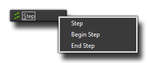

The Step Events
The step events are one of the many events that can be triggered in an instance and may contain code or actions.
The Step Events
GameMaker:Studio splits time into steps with the room speed defining how many of these steps there are supposed to be per second. A step, is basically the loop that runs constantly with all the events
being checked and triggered as necessary while the game runs, so as you can imagine, the Step Event is an event that is checked every single step of the game while the instance exists.
The step event is actually comprised of three sub events that are outlined below :

For most things the standard step event will be fine to use, but sometimes you want a bit more control over what code runs and at what time, so for that you are provided with the begin and end step events. All three are
checked every step, but their order will never vary even through future updates to the GameMaker:Studio engine, which means that this is the only reliable method of making sure that something always happens
before something else. So what can the step event be used for? Well, it can be used for actions or code that needs to be executed continuously. For example, if one object should follow another, here you can adapt the direction
of motion towards the object we are following to keep it moving smoothly behind. Be careful with this event though! Don't put many complicated actions in the step event of objects, especially if you are planning on having
lots of instances of the object in your game room, as this might slow the game down.